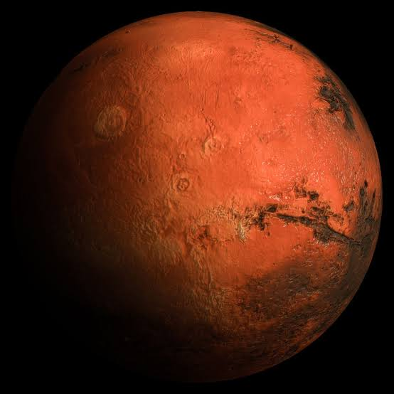
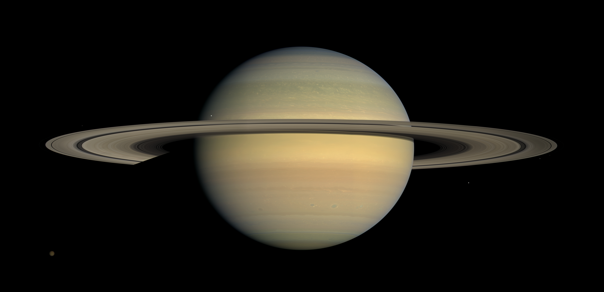
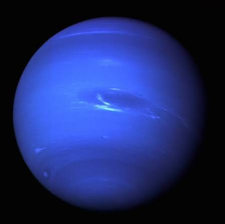

Planetas
Los planetas son entidades celestiales que habitan en un sistema solar, transladandose sobre el sol en orbitas elipticas, estos planetas son clasificados en 3 tipos dentro de nuestro sistema solar, los rocosos, los gigantes gaseosos y los gigantes helados.
Dato curioso: Existen otras clasificaciones para planetas como los Planetas principales (Tierra, Jupiter, etc.), Planetas enanos (Plutón, Ceres, etc.) y Exoplanetas, que son planetas que no pertenecen a nuestro sistema solar.

Marte Rocoso
Su color rojizo se debe al óxido de hierro en su superficie. Tiene el volcán más grande conocido del Sistema Solar, el Monte Olimpo.

Saturno Gigante gaseoso
Sus anillos están hechos de hielo y roca. Es tan poco denso que, en teoría, flotaría en un océano lo bastante grande.

Neptuno Gigante helado
Es el planeta más lejano al Sol y tiene los vientos más veloces, que superan los 2,000 km/h en su atmósfera.